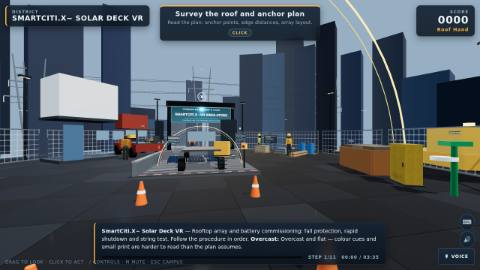

Energy & Power
Solar Deck
A photovoltaic array that is energised whenever the sun is up and cannot be switched off at the panel.
- ANSI/ASSP — ANSI/ASSP Z359 — Fall Protection Code
- union — IBEW/NECA Joint Apprenticeship and Training Committee — inside and outside wireman apprenticeship standards, taught from the electrical training ALLIANCE curriculum
- NABCEP — NABCEP PV Installation Professional certification
- NFPA — NFPA 70E — Standard for Electrical Safety in the Workplace
- OSHA — 29 CFR 1910.147 — The control of hazardous energy (lockout/tagout)
- OSHA — 29 CFR 1926.501 — Duty to have fall protection
base run daylight dusk high wind fog rain hazard mode interruption: array relit interruption: lanyard off assessment variant
Launch Solar Deck